从图纸开始
后院的活是干不完的。这次准备自己动手做一个高尔夫推杆练习果岭，材料用人造草坪。动工之前，先把后院的平面布局在CAD里整理了一遍——随着这几年不断改造，图上的内容越来越丰富了。
后院的活是干不完的。这次准备自己动手做一个高尔夫推杆练习果岭，材料用人造草坪。动工之前，先把后院的平面布局在CAD里整理了一遍——随着这几年不断改造，图上的内容越来越丰富了。
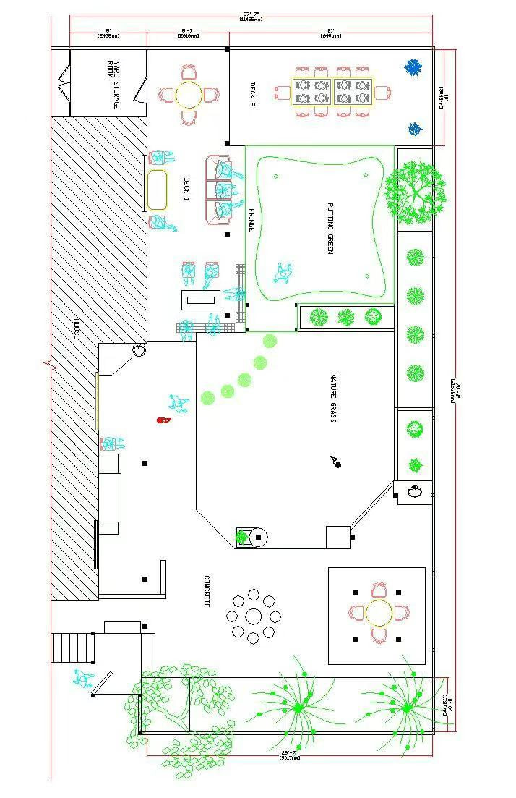
果岭的形状设计了三个方案：苹果形、枫叶形、三叶草（四叶草）形。为了尽可能利用有限的面积，最终选定了三叶草形。
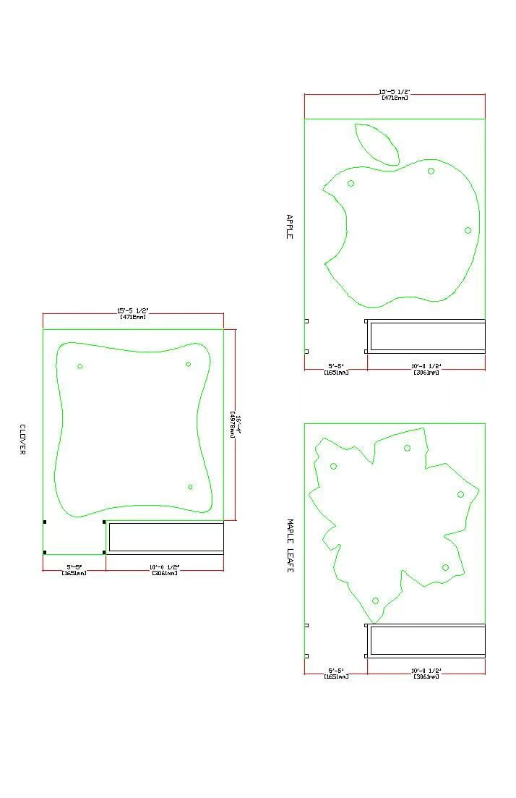
枫叶形的方案还专门让AI来参谋了一下，看它能不能给出更好的设计——结果比较令人失望，几个方案实用性和空间利用率都不理想。
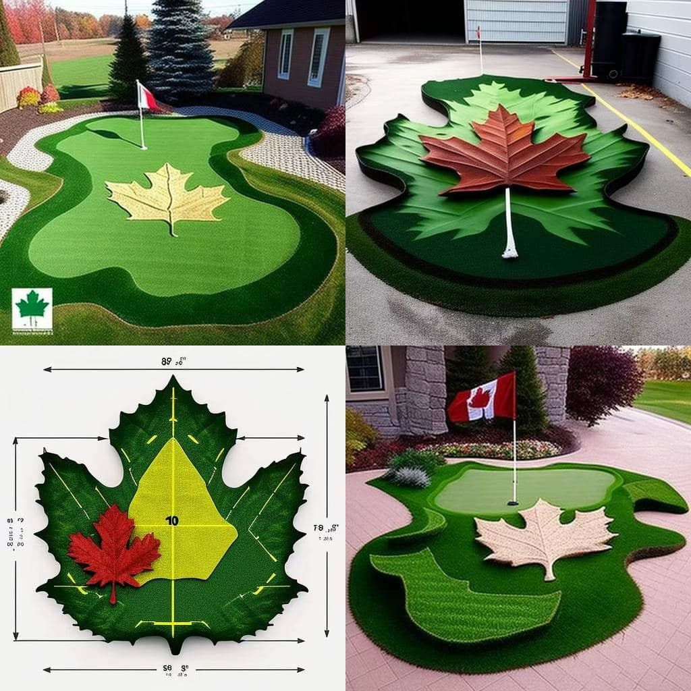
方案定了，开始动工。第一步是把原来的草坪全部铲掉，清出干净的地基。铲完之后从 deck 往外看，院子里一片泥土，空旷得有点陌生。坐下来泡杯茶，看着这片空地，心里反而有种踏实的期待。
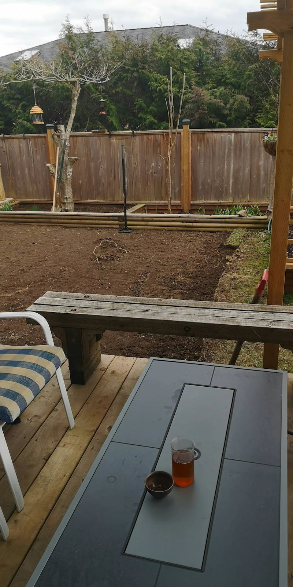
安装人造草坪果岭，工序比想象中多，提前做了不少功课。好在不用赶工期，有空就做一点。
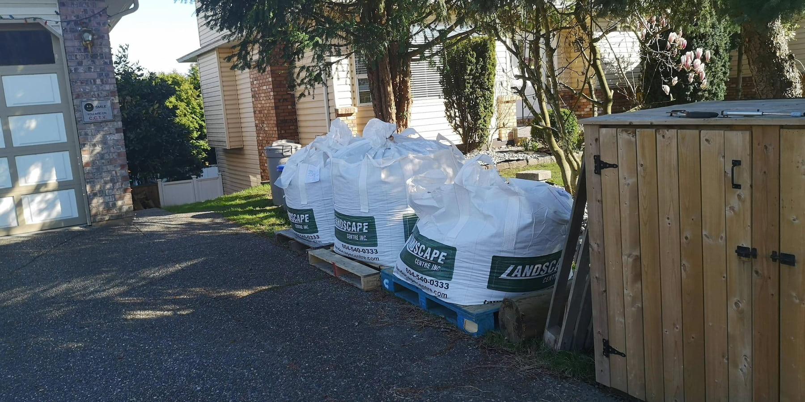
泥土上先铺隔草布，再铺路基碎石找平后夯实，然后铺碎石粉，最后用草坪滚碾压。每一步都不能省。
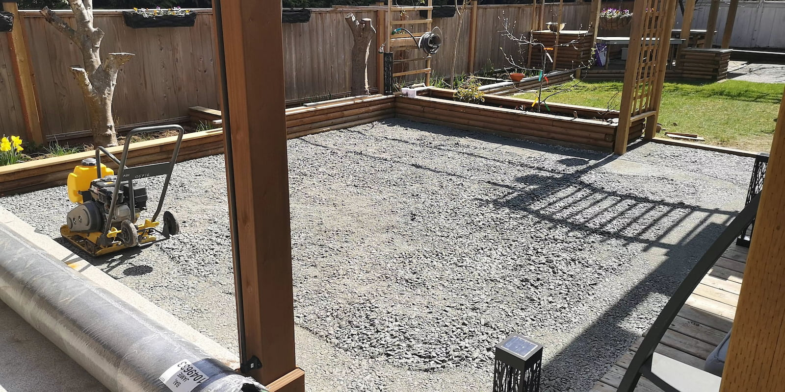
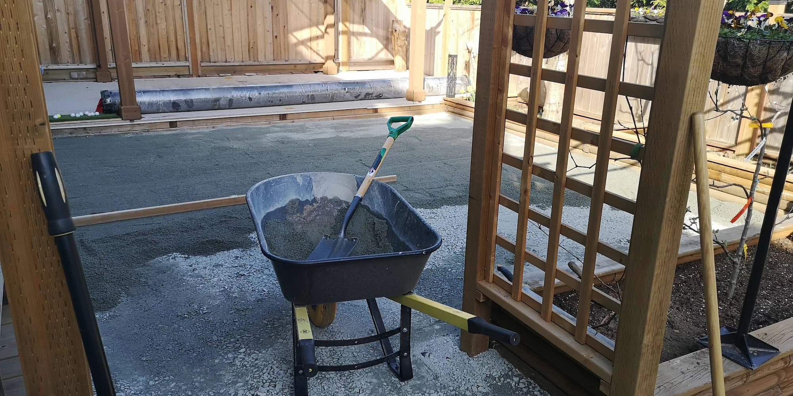
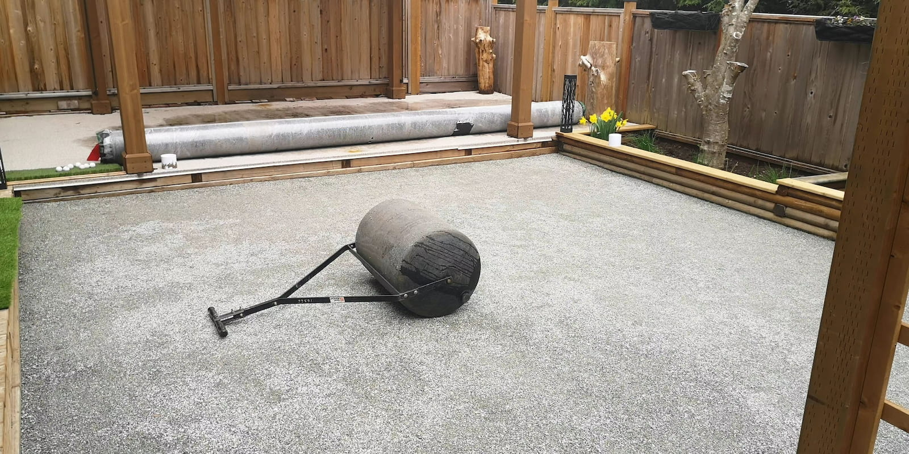
基础处理好之后，开始铺人造草坪。先用粗绳在草坪上摆出果岭的大概形状，确认位置和比例，再动刀裁剪。
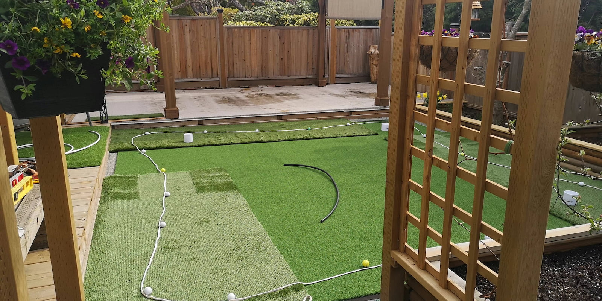
形状确认后，对两层草坪分别裁剪，在洞杯位置挖坑埋入洞杯，再在果岭草坪上挖出对应的洞。接缝处用专用胶带从背面粘接，周边和果岭环上均匀楔入4寸长的专用固定钉，前后大概用了390根。
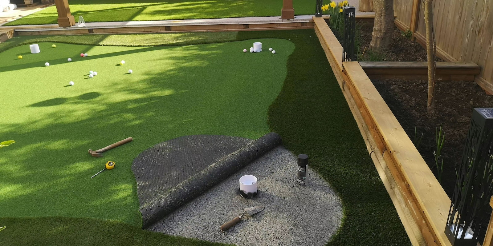
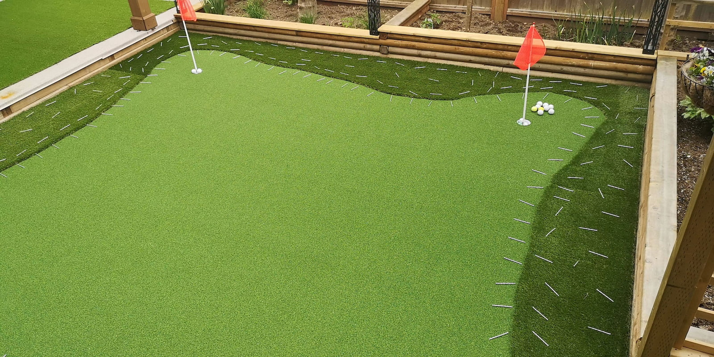
最后在整个果岭上均匀铺约400磅重的特细沙。沙子的重量能再次固定草坪，同时可以通过沙量来调节果岭的速度（9.5到11之间）。
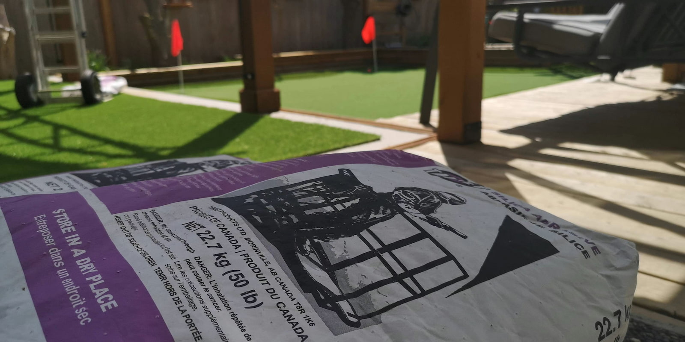
享受设计制作的过程，
也期待着看到结果。
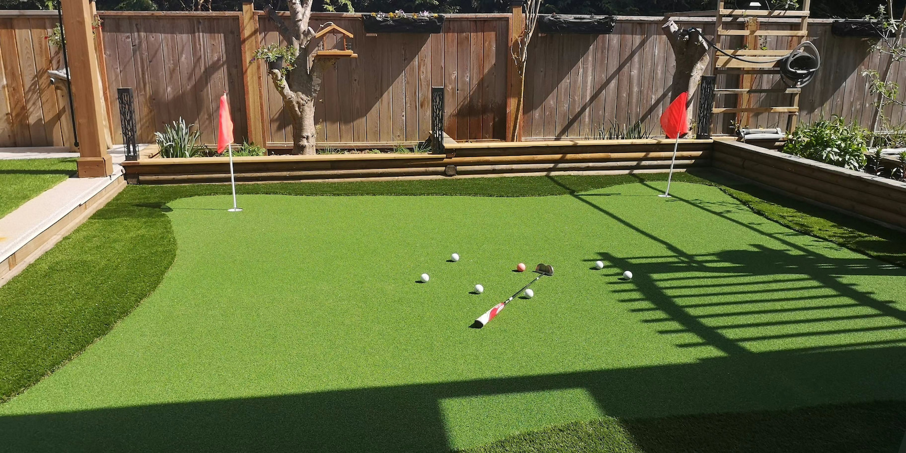
这个16×16英尺的果岭，估计是三个熟练工人最少三天的工作量。夯实机和草坪滚都是从homedepot租用的专用工具，最小的夯实机也非常重，一个人无法从车上装卸，我是请邻居帮忙的。
挖出的草坪、泥土，以及回填的基础材料，比想象中多得多。填挖是体力活，基础找平和草坪的裁切、连接、固定则是细活。
工程量不小，工序较多，自己施工需要有足够的耐心。如果你也有兴趣DIY，可以私信，我能分享更多细节。